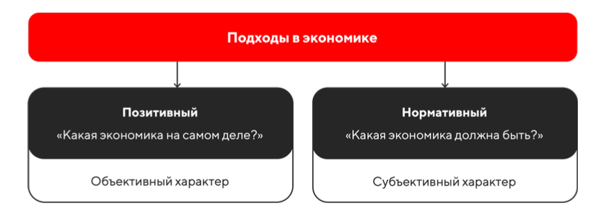

Сущность экономики
Экономика может рассматриваться в двух разных значениях:
-
1 хозяйство
-
2 наука
Экономика как хозяйство › организованная деятельность людей, направленная на производство, распределение, обмен и потребление экономических благ с целью удовлетворения потребностей отдельных индивидов и общества в целом.
Экономика как наука › наука, которая изучает законы функционирования экономики-хозяйства, проблемы ее функционирования и способы их разрешения в условияхограниченностиэкономических ресурсов.
В свою очередь, современная экономика как наука структурно делится на два раздела — микроэкономику и макроэкономику, отличающиеся масштабом изучаемых явлений и процессов.
Экономические отношения оказывают влияние как на целые государства, так и на отдельных участников экономических отношений. Разделение на микроэкономику и макроэкономику позволило ответить на разные вопросы, стоящие перед человечеством.
Микроэкономика › часть экономики, которая изучает экономическую деятельность на уровне отдельных экономических субъектов. Ее интересует принятие экономических решений отдельными людьми и фирмами с учетом мотивации их поведения, а также функционирование отдельных рынков. В рыночной экономике взаимодействие отдельных экономических агентов происходит именно на рынках товаров, услуг и ресурсов в условиях конкуренции.
Макроэкономика › часть экономики, которая изучает общую картину экономической деятельности. Макроэкономика охватывает всю экономику в целом на уровне страны или всего мира, а также деятельность государства в экономике в контексте государственной экономической политики.
Понимание такой структуры экономики как науки лучше всего проявляется на практике — они взаимосвязаны и выступают как частное и общее. Проводя сравнение по аналогии, можно сказать, что микроэкономика изучает строение дома, но не замечает квартал, район или целый город. Макроэкономика рассматривает функционирование целых городов, за которыми не видно отдельных сооружений.
Это в полной мере проявляется при сравнении круга изучаемых вопросов. Например, для микроэкономики представляет интерес стоимость отдельных товаров и услуг. Для макроэкономики — общий уровень цен в экономике, откуда проявляется и понимание процессов инфляции. Микроэкономика изучает разные доходы фирм и домохозяйств, а макроэкономика — национальный доход всего государства, региона или мира. Ученым, которые занимаются микроэкономикой, важна эффективность конкретной фирмы и ее деятельность, а их коллегам из другого лагеря — национальное производство и эффективность всей экономики.
Метод, с помощью которого экономика-наука изучает экономические процессы, явления и закономерности, включает нормативный и позитивный подходы.
Сравнительная характеристика этих подходов отражена на схеме ниже:
Позитивный подход отвечает на вопрос «Как есть на самом деле?». Он имеет дело с фактами и не допускает качественных оценок, занимаясь лишь констатацией объективных фактов.
Нормативный подход отвечает на вопрос «Как должно быть?». Он, напротив, предполагает качественные оценки того, какой должна быть экономика, выражая то или иное субъективное мнение.
Пример позитивного, то есть фактического, утверждения: «Если курс доллара возрастет, это будет способствовать росту экспорта».
Пример нормативного, то есть оценочного, утверждения: «Стипендии студентов не должны быть ниже уровня прожиточного минимума».
Констатация факта, что цена на проезд в столичном общественном транспорте за последний год поднялась с 54 до 57 рублей — это пример позитивного подхода. Если же мы выразим мнение, что подобное повышение цены проезда повышает прожиточный минимум и потому снижает уровень жизни населения, то это уже будет проявление нормативного анализа.